Bàn Đối Chiếu Sản Phẩm: Bản V3 Ultra-Clean (7 Cảnh Tách Bạch • 85% Không Gian Thở • 0% HUD) + Bộ 3 Bản 27s 60fps
Tài liệu này đặt Bản V3 Ultra-Clean 10 Giây Đầu Tiên (VietCleanV3_10s.tsx — 7 Cảnh Tách Bạch • 1 Tâm Điểm Duy Nhất • 85% Không Gian Âm • 0% Khung Hộp/Nhãn Rác) ngay tại vị trí trung tâm đầu trang, tuân thủ triết lý "Tối giản như Apple Keynote & Pinterest gốc (pin_05, pin_07, pin_08)": tại bất kỳ mili-giây nào mắt người xem chỉ nhìn vào đúng 1 cụm chữ hoặc 1 hạt mồi cảnh duy nhất, cảnh cũ phải dọn sạch hoặc nhường chỗ hoàn toàn trước khi cảnh mới xuất hiện. Phía dưới là Bản V2 và trọn bộ 3 phiên bản 27 giây (1.620 frames @ 60fps).
★ Bản V3 (Ultra-Clean 7 Cảnh Tách Bạch – 10s Đầu 9:16 • 85% Không Gian Thở • 0% HUD)
PRE-CUE, SEMANTIC_CORE, AI_01) và các hộp viền neon lồng nhau. Mỗi câu thoại đứng tự do trên mặt phẳng Tối (#07080A) hoặc Trắng Kem (#F7F4ED) với tối thiểu 85% khoảng thở.✱ ✱ ✱ ✱ hóa thành chữ và gạch ngang đỏ → Whip-Pan sang nền Đen, 1 con trỏ vàng click mở viên thuốc ✦ Bây giờ → 4 hạt hình học tụ tâm mở kỷ nguyên của → Ngoặc vàng < ✦ > tách mở đại tự NGỮ NGHĨA → Trục chữ nghiêng -6° → 0° không viền khóa vào ✕ idol trên video.0.0A. Trình Phát Video 10s V3 (Ultra-Clean 60fps) & Lưới Đối Chiếu 7 Cảnh (Pre-Cue Seed vs. Chữ Chính)
Video motion02_v3_clean_10s_9x16_60fps.mp4: 7 cảnh sạch tinh khiết, chữ đứng tự do trên nền thoáng 85%, âm thanh 20 sự kiện / 74 lớp sfx.fedu.vn.
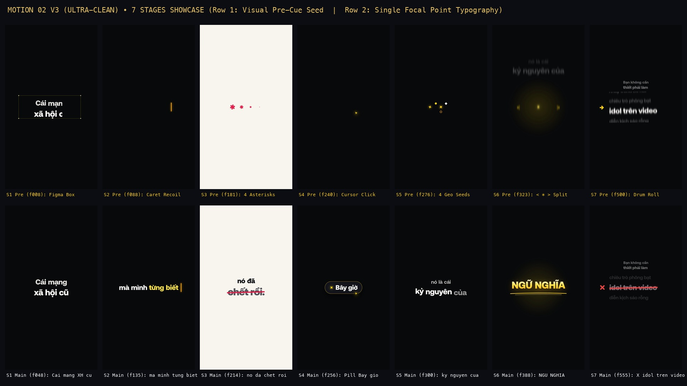
Đối chiếu trực diện 7 cảnh từ S1 đến S7: Hàng trên là hạt mồi Pre-Cue tối giản (10–14 frames trước thoại); Hàng dưới là chữ chính sau khi hạt mồi đã tự tan biến.
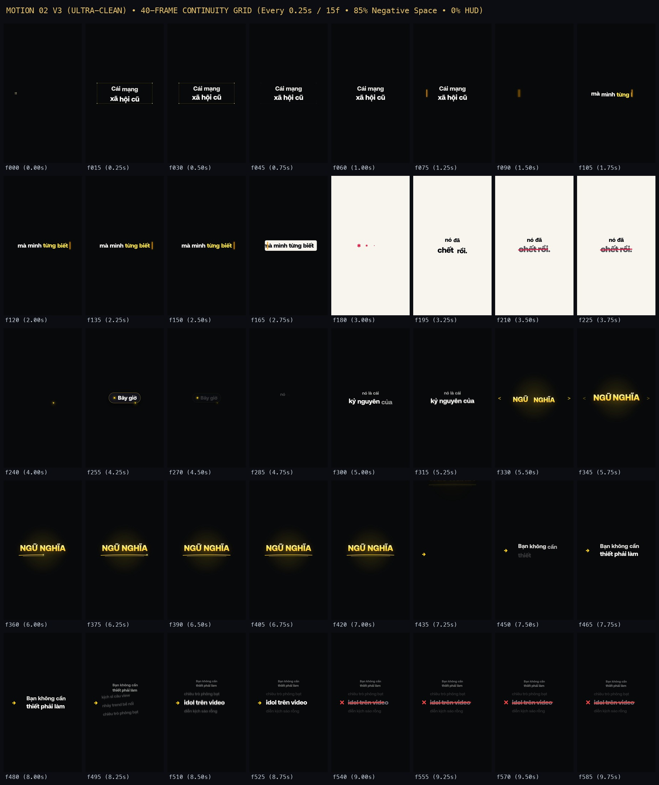
Kiểm chứng 40 mốc thời gian (mỗi 15 frames = 0.25s): không có bất kỳ cảnh nào bị chồng đè chữ cũ - chữ mới, không có HUD hay khung viền thừa.
0.0B. Bảng Thiết Kế 7 Cảnh Đơn Tâm Điểm & Bàn Giao Liên Cảnh (V3 Clean Choreography)
| Cảnh (Stage) | Mốc Frame / Giây | Nền & Tỷ Lệ Thoáng | Hạt Mồi (Pre-Cue Seed) | Tâm Điểm Chữ Duy Nhất (Single Focal Point) | Cơ Chế Tự Dọn Sạch & Bàn Giao Cảnh Kế |
|---|---|---|---|---|---|
| Cảnh 1 | f0 → f88( 0.00s–1.47s) |
Đen sâu #07080A (88% thoáng) |
Khung chọn Figma mảnh 1.5px vàng + 4 nút góc vuông kéo mở từ tâm (f0–f16), tự mờ đi ở f30–f46 |
"Cái mạng / xã hội cũ" đứng tự do không viền | Thanh Caret vàng xuất hiện bên trái, quét sang phải nuốt gọn toàn bộ chữ (f74–f86), chỉ còn lại 1 thanh Caret duy nhất |
| Cảnh 2 | f88 → f176( 1.47s–2.93s) |
Đen sâu #07080A → Trắng Kem #F7F4ED |
Thanh Caret vàng từ Cảnh 1 bật ngược từ phải sang trái kèm motion blur (f88–f98) |
"mà mình từng biết" gõ ra từ trái sang phải theo thanh Caret (f98–f130) |
Tại f158–f169, Caret quét ngược sang trái bôi sáng dải nền Trắng Kem #F7F4ED, sau đó dải sáng nở bung toàn màn hình (f169–f180) |
| Cảnh 3 | f175 → f238( 2.92s–3.97s) |
Trắng Kem #F7F4ED (90% thoáng) |
4 dấu hoa thị đỏ ✱ ✱ ✱ ✱ đứng tự do nảy lên giữa nền trắng (f175–f185, học pin_07) |
"nó đã / chết rồi." + Thanh gạch ngang đỏ cắt qua "chết rồi." tại f204 |
Cú Spatial Whip-Pan sang trái ở f226–f238 đẩy toàn bộ tấm nền Trắng Kem ra khỏi khung hình, lộ nền Đen sâu #07080A |
| Cảnh 4 | f235 → f280( 3.92s–4.67s) |
Đen sâu #07080A (92% thoáng) |
1 con trỏ mũi tên vàng duy nhất (không nhãn) bay từ phải vào tâm và click tại f242 kèm vòng sóng 1.5px |
Viên thuốc mảnh "✦ Bây giờ" nảy lên tại tâm | Tại f268–f276, chữ và viền thuốc mờ đi, chỉ giữ lại ngôi sao 4 cánh vàng ✦ ở đúng tâm màn hình |
| Cảnh 5 | f272 → f326( 4.53s–5.43s) |
Đen sâu #07080A (88% thoáng) |
Ngôi sao ✦ hút thêm 3 hạt hình học tối giản (tròn, thoi, vòng tròn) tụ về tâm (f272–f282) rồi biến mất hoàn toàn ở f284 |
"nó là cái / kỷ nguyên của" đứng tự do giữa màn hình | Tại f314–f325, cụm chữ trượt nhẹ lên trên và tan biến hoàn toàn, nhường lại 100% tâm điểm trống cho Cảnh 6 |
| Cảnh 6 | f318 → f438( 5.30s–7.30s) |
Đen sâu #07080A + quầng vàng dịu (86% thoáng) |
Cặp dấu ngoặc vàng tối giản < ✦ > tách sang hai bên trái/phải (f318–f329) |
Đại tự vàng kim "NGỮ NGHĨA" (92px) + Nét cọ vàng kép gạch chân tự vẽ tại f356–f394 |
Tại f422–f437, đại tự "NGỮ NGHĨA" trượt hẳn lên trên ra ngoài khung hình, kéo theo mũi tên vàng → vào vị trí trung tâm |
| Cảnh 7 | f432 → f600( 7.20s–10.00s) |
Đen sâu #07080A (85% thoáng) |
Pha 7a (f432–f492): Mũi tên → mở dòng "Bạn không cần / thiết phải làm"; Pha 7b (f494–f514): Trục chữ nghiêng -6° → 0° không khung cuộn dọc 4 dòng (học pin_05) |
Khóa đanh tại "→ idol trên video" (f514), sau đó biến thành "✕ idol trên video" kèm gạch ngang đỏ tại f534–f600 |
Giữ nhịp kết đanh gọn đến f600 (10.00s) |
Bản Làm Lại 10s Đầu 9:16 (V2 — Có Mồi Cảnh Pre-Cue & Chuyển Mượt Liên Cảnh + 2 Mẫu Pinterest Mới)
<WorldCanvas> 2160×1920): Xóa bỏ hoàn toàn việc ngắt {frame < 240}. Cảnh 1 → Cảnh 2 nối bằng Shared-Element Morph (Thanh gạch ngang đỏ thu hẹp thành Con Trỏ Sao Chổi Vàng COMET_SEED →) kéo Camera thực hiện cú Directional Whip-Pan ngang kèm <feGaussianBlur> thực thụ (32px tại f238). Cảnh 2 → Cảnh 3 nối bằng Portal Gate Split & Zoom-Through (2 chữ NGỮ ←→ NGHĨA tách sang hai bên mở cổng sáng cho Cảnh 3 mọc lên từ chính giữa lòng cổng tại f420–f444).f0–f16: Nút lõi vuông + Khung chọn Figma 4 góc kéo rộng mở clip-path sóng từ "CÁI MẠNG XÃ HỘI CŨ"; (2) f82–f99: Thanh Caret cam rơi dọc + Hạt giống chữ M mồi trước dòng "MÀ MÌNH TỪNG BIẾT"; (3) f160–f186: Header Recoil vọt lên đỉnh + 4 hoa thị ✱✱✱✱ xoay & Tia kiếm xẻ chéo nền Đen mở nền Trắng Kem trước khi biến hình thành "NÓ ĐÃ CHẾT RỒI."; (4) f264–f328: 6 Con trỏ AI đa sắc bay xoắn ốc kéo mở khung kính + Hộp mồi < ✦ SEMANTIC_CORE ✦ > nổ ra đại tự 3D "NGỮ NGHĨA"; (5) f490–f516: Vòng quay dọc Vertical Slot-Wheel cuộn tốc độ cao rồi khóa cơ học vào ✖ IDOL TRÊN VIDEO.0.1. Trình Phát Video 10s V2 (60fps) & Bảng Kiểm Định 16 Khoảnh Khắc Mồi Cảnh / Chuyển Cảnh
Bản làm lại 10s đầu (motion02_v2_precue_10s_9x16_60fps.mp4) kèm âm thanh 22 sự kiện / 82 layers từ sfx.fedu.vn đồng bộ từng nhịp Pre-Cue.
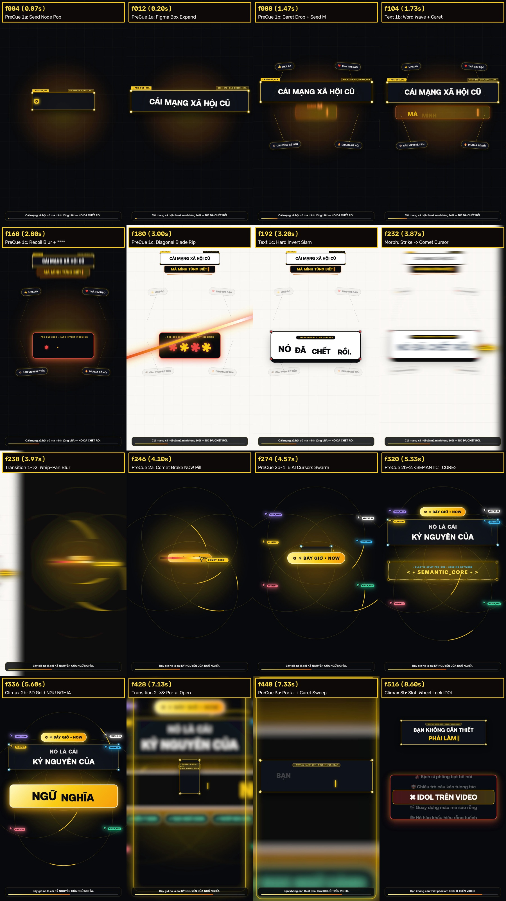
16 khoảnh khắc mấu chốt: Figma Box Expand (f4, f12), Caret + Seed M (f88), Recoil + Diagonal Blade Rip (f168, f180), Whip-Pan (f232, f238), 6 AI Cursors & Semantic Core (f274, f320), Portal Split (f428, f440), Slot-Wheel Lock (f516).
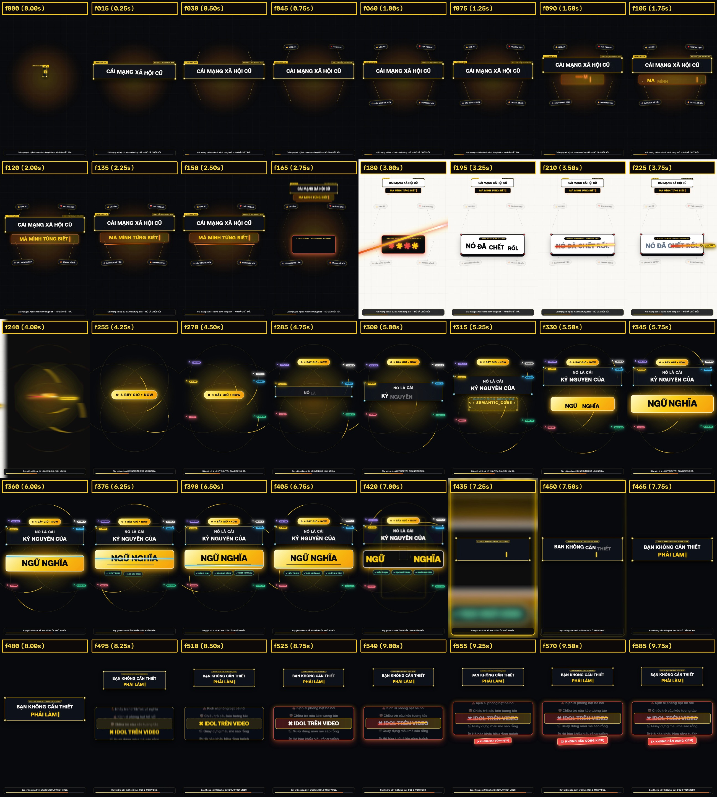
Kiểm chứng toàn bộ 40 mốc thời gian (mỗi 15 frames = 0.25s): không có bất kỳ frame chết hay vết cắt đột ngột nào giữa các cảnh.
0.2. Hai Mẫu Pinterest Mới Giải Phẫu Cho Bản V2 (pin_07 & pin_08)
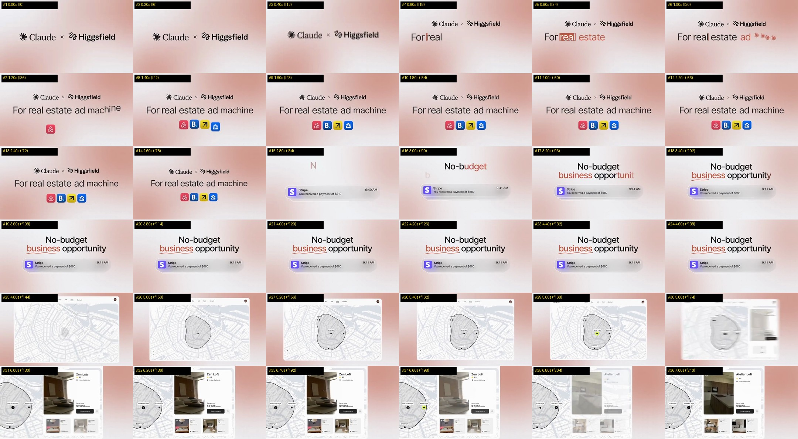
Giải phẫu pin_07: Hạt giống 4 dấu hoa thị ✱✱✱✱ biến hình thành chữ, vết rách chéo đổi nền (Diagonal Rip), và chữ cái đầu rơi xuống trước làm mồi (Lead-Char Seed).
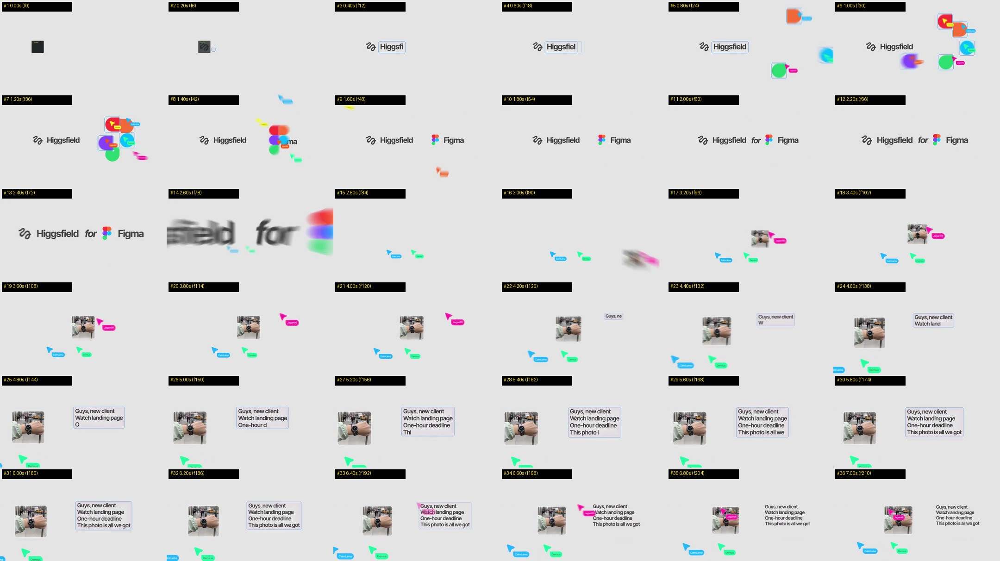
Giải phẫu pin_08: Khung chọn kiểu Figma có 4 nút góc kéo rộng mở chữ, 6 con trỏ đa sắc tụ hội kéo khung kính, Elastic Split tách dòng và cú Whip-Pan ngang.
I. Bàn Đối Chiếu Sản Phẩm: Từ 27 Giây Video Gốc + Thoại SRT → 3 Phiên Bản Motion Graphic 60fps
1.1. Đầu Vào Gốc (Input — 27 Giây Đầu Của Video Quay Thật + File Phụ Đề .SRT)
Đầu vào gồm 27 giây đầu tiên (00:00.000 → 00:27.000, tương ứng 1.620 khung hình ở tốc độ 60fps) trích xuất từ file gốc Qc offline - ngữ nghĩa đăng fb9.mp4 và file phụ đề Qc offline - ngữ nghĩa đăng fb9.srt.
File gốc 27s đầu: có câu mở đầu 0s–4s kèm chữ chèn sẵn góc trên và các đoạn bảng đen giải thích xen kẽ cảnh anh Việt ngồi nói.
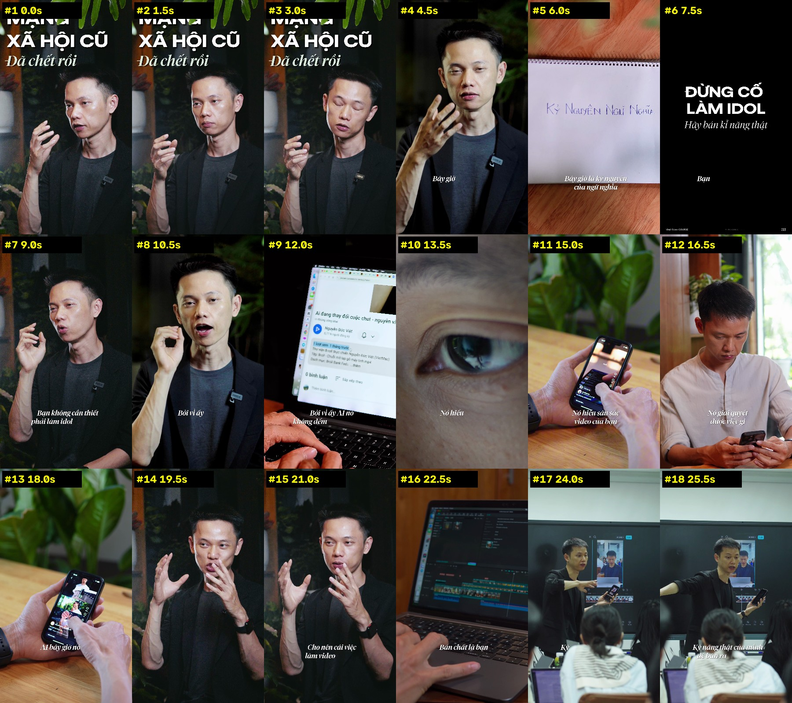
Quét khung hình video gốc giúp phát hiện chính xác các vùng anh Việt xuất hiện trực diện (0s–1.6s, 8.9s–9.8s, 18.6s–21.4s) để giữ lại làm bản Hybrid.
0.00s – 4.00s): Trong file .srt gốc, dòng phụ đề số 1 chỉ bắt đầu từ giây thứ 4.000s ("Bây giờ là kỷ nguyên của ngữ nghĩa"). Tuy nhiên, khi chạy bộ quét năng lượng sóng âm RMS/Peak theo cửa sổ 20ms kết hợp đọc khung hình gốc, hệ thống phát hiện từ 0.00s – 4.00s anh Việt đã nói 3 nhịp mở đầu cực đắt giá: "Cái mạng xã hội cũ / mà mình từng biết / nó đã chết rồi". Cả 3 nhịp này được đưa trọn vẹn vào Màn 1 (f0 → f240)..srt) được chuẩn hóa bảng mã Unicode NFC và quy đổi sang chỉ số khung hình theo công thức frame = round(sec * 60) trên tổng độ dài 1.620 frames.| Mã Nhịp | Nguồn Bóc Tách | Mốc Giây (s) | Khung Hình 60fps | Đỉnh Giọng (Peak) | Lời Thoại Nguyên Văn Của Anh Việt (Unicode NFC) | Màn & Mẫu Áp Dụng |
|---|---|---|---|---|---|---|
HOOK_01 |
Sóng âm + Frame | 0.13s → 1.15s |
f8 → f69 |
0.24s (f14, -7.8 dBFS) |
"Cái mạng xã hội cũ" | Màn 1 • Mẫu 4 (pin_04) |
HOOK_02 |
Sóng âm + Frame | 1.65s → 2.36s |
f99 → f142 |
2.14s (f128, -7.5 dBFS) |
"mà mình từng biết" | Màn 1 • Mẫu 4 (pin_04) |
HOOK_03 |
Sóng âm + Frame | 3.09s → 3.88s |
f185 → f233 |
3.52s (f211, -8.0 dBFS) |
"nó đã chết rồi" | Màn 1 • Đảo nền âm bản tại f186 |
SRT_01 |
File .SRT #1 | 4.00s → 6.62s |
f240 → f398 |
5.99s (f359, -6.3 dBFS) |
"Bây giờ là kỷ nguyên của ngữ nghĩa" | Màn 2 • Mẫu 0 (pin_00 Orbit Rings) |
SRT_02 |
File .SRT #2 | 7.38s → 9.75s |
f442 → f585 |
8.11s (f487, -6.0 dBFS) |
"Bạn không cần thiết phải làm idol trên video" | Màn 3 • Mẫu 1 (pin_01 Wheel Picker) |
SRT_03 |
File .SRT #3 | 9.88s → 12.92s |
f592 → f775 |
11.84s (f710, -7.4 dBFS) |
"Bởi vì ấy AI nó không đếm tương tác nữa" | Màn 4 • Mẫu 5 (pin_05 Trụ 3D -8°) |
SRT_04 |
File .SRT #4 | 13.04s → 15.38s |
f782 → f922 |
13.12s (f787, -7.1 dBFS) |
"Nó hiểu sâu sắc video của bạn" | Màn 5 • Mẫu 2 (pin_02 Nhánh 1 & 2) |
SRT_05 |
File .SRT #5 | 15.38s → 16.58s |
f922 → f995 |
15.85s (f951, -6.6 dBFS) |
"Nó giải quyết được việc gì" | Màn 5 • Mẫu 2 (pin_02 Nhánh 3 Vàng) |
SRT_06 |
File .SRT #6 | 16.79s → 19.46s |
f1007 → f1167 |
17.16s (f1030, -7.9 dBFS) |
"AI bây giờ nó hiểu bạn còn hơn vợ bạn" | Màn 6 • Mẫu 1 (3-Sphere) + Mẫu 0 (Sword) |
SRT_07 |
File .SRT #7 | 19.58s → 21.21s |
f1175 → f1272 |
20.31s (f1219, -7.4 dBFS) |
"Cho nên cái việc làm video bây giờ" | Màn 7 • Mẫu 3 (pin_03 Glass Rolodex) |
SRT_08 |
File .SRT #8 | 21.75s → 23.62s |
f1305 → f1418 |
21.98s (f1319, -6.6 dBFS) |
"Bản chất là bạn phải đóng gói được" | Màn 8 • Mẫu 3 (pin_03 Isometric Grid) |
SRT_09 |
File .SRT #9 | 23.88s → 26.21s |
f1432 → f1572 |
23.96s (f1438, -9.0 dBFS) |
"Kỹ năng thật của mình để bán ra thị trường" | Màn 9 • Mẫu 6 (pin_06 Pill & Rack Focus) |
1.2. Thành Phẩm 1 — Bản Full Motion Graphic Dọc 9:16 (1080×1920 @ 60fps)
Phiên bản đầu tiên biến toàn bộ 27 giây lời thoại của anh Việt thành 9 màn đồ họa chuyển động dọc 9:16 trên nền Đen Obsidian (#08090C) – Trắng Kem (#FAF8F5) – Vàng Gold (#FACC15 / #F59E0B), kết hợp thanh Timecode phía trên và thanh Phụ đề đồng bộ tiến trình ở cạnh dưới:
File: motion02_full_mg_9x16_60fps.mp4 — Đầy đủ giọng thoại gốc của anh Việt kết hợp 24 điểm nổ âm thanh 4 tầng từ sfx.fedu.vn.
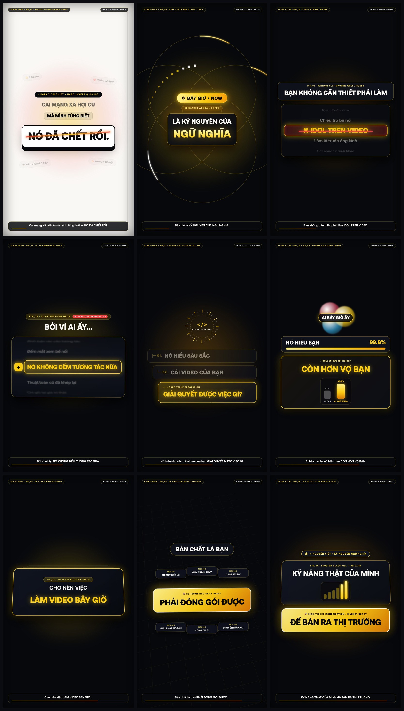
9 khung hình trích xuất tự động tại tâm điểm của 9 màn (f210, f340, f530, f730, f960, f1145, f1230, f1380, f1540).
1.3. Thành Phẩm 2 — Bản Hybrid Thực Chiến: Talking Head Anh Việt + HUD & Motion Graphic 9:16 (1080×1920 @ 60fps)
Phiên bản thứ hai giữ lại hình ảnh người thật của anh Việt ở những nhịp nhấn cảm xúc trực diện (f0 → f98 mở đầu, f474 → f592 câu "không cần làm idol" đã tự động dịch trimBefore: 62 để bỏ qua đoạn bảng đen của video gốc, và f1116 → f1284 câu "còn hơn vợ bạn / việc làm video bây giờ") kèm thẻ HUD Kính Mờ 3D Lower-Third; đồng thời tự động chuyển sang Full Motion Graphic 60fps ở các câu giải thích cơ chế sâu:
File: motion02_hybrid_9x16_60fps.mp4 — Kết hợp mặt thật anh Việt + thẻ HUD kính mờ và các màn đồ họa 3D.
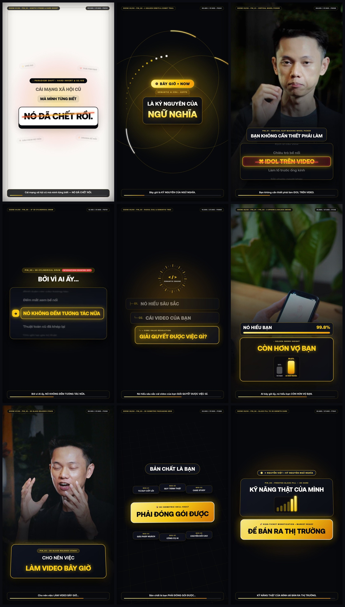
Tại Màn 3 (f530), Màn 6 (f1145) và Màn 7 (f1230), cảnh quay anh Việt xuất hiện sắc nét phía sau lớp thẻ kính mờ Vàng Gold.
1.4. Thành Phẩm 3 — Bản Full Motion Graphic Ngang Widescreen 16:9 (1920×1080 @ 60fps)
Phiên bản thứ ba được dàn trang riêng cho màn hình ngang 1920×1080 (dùng cho bài giảng khóa học, YouTube hoặc trình chiếu sân khấu). Ở chế độ ngang, các màn như Màn 5 (La Bàn Chia Độ + Cây Phân Cấp 3 Nhánh) tự động chuyển sang bố cục 2 cột song song (flexDirection: 'row') để tận dụng trọn vẹn chiều rộng 1920px:
File: motion02_full_mg_16x9_60fps.mp4 — Bản ngang Full HD 60fps với không gian 3D mở rộng.
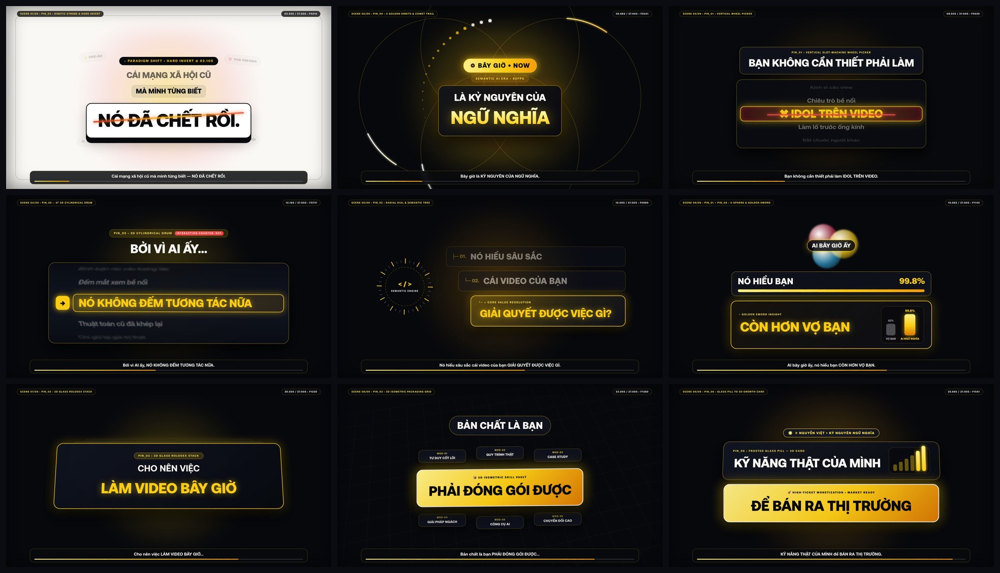
Toàn bộ 9 màn ở tỷ lệ 16:9 giữ nguyên độ sắc nét của dấu tiếng Việt (lineHeight >= 1.28) và khoảng thở hai bên.
1.5. Nghe Riêng Bản Phối Hiệu Ứng Âm Thanh 4 Tầng Từ Kho sfx.fedu.vn (24 Cues / 93 Layers)
Trước khi trộn với giọng thoại anh Việt bằng bộ lọc nén động lực học sidechaincompress, toàn bộ 24 điểm nhấn thị giác trong 27 giây đã được động cơ InstantVaultComposer tự động gắp 93 mảnh âm thanh (micro-slices) từ kho 10.768 slices của sfx.fedu.vn theo cấu trúc 4 tầng (L1_lead_in mồi gió trước 80–160ms → L2_transient điểm nổ đúng frame → L3_body lực trầm → L4_texture đuôi cơ khí). Anh Việt có thể bấm nghe riêng lớp nền hiệu ứng âm thanh 27 giây ngay dưới đây:
File: assets/motion02/sfx_bed_only_27s.mp3 — Đã cắt lọc tần số bảo vệ giọng nói (High-pass >2.2kHz cho lớp Transient và Low-pass <280Hz cho lớp Sub Body) để nhường trọn dải trung âm 300Hz–2.2kHz cho tiếng nói của anh Việt.
II. Thư Viện 7 Mẫu Chuyển Động Pinterest Đã Tải Về & Giải Phẫu Chi Tiết
Để tránh việc lặp đi lặp lại một kiểu hiệu ứng nhàm chán suốt 27 giây, hệ thống đã tải trực tiếp các video mẫu từ Pinterest về thư mục assets/motion02/pinterest_samples/, trích xuất lưới 16 khung hình (4×4) để giải phẫu từng cơ chế chuyển động, công thức toán học và phân bổ vào đúng câu thoại phù hợp nhất trong 9 màn:
Mẫu 0 — 4 Vòng Quỹ Đạo (Orbit Rings) + Sao Chổi 18 Hạt (Comet Trail) & Tia Kiếm Cắt Màn Hình (Golden Sword Slit)
Mẫu gốc từ motion01.html với đại cảnh 4 vòng quỹ đạo giao thoa, sao chổi chạy dọc viền và tia sáng chém ngang màn hình.
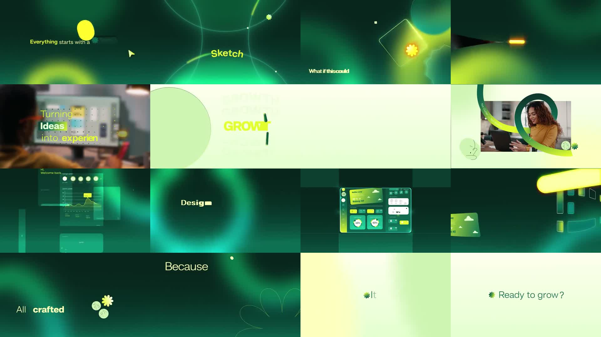
Các pha chuyển động chủ đạo: con trỏ bay đường cong Bézier, 4 vòng quỹ đạo đồng tâm và tia kiếm cắt đôi màn hình.
cubicBezierPoint(t, P0, P1, P2, P3) bấm kích hoạt 4 vòng quỹ đạo SVG xoay ngược chiều nhau; 18 hạt sao chổi chạy bám theo bán kính R = 230px rồi hội tụ về tâm; cộng thêm hiệu ứng Tia kiếm ánh sáng vàng (Golden Sword Slit) quét chéo góc -9deg cắt mở thẻ nội dung.#062C1E) & Xanh lá mạ (#34D399) → Chuyển sang bảng màu thương hiệu anh Việt: Đen Obsidian (#07080C) + Vàng Gold (#FACC15 / #FDE047) + Trắng Kem (#FAF8F5).cx = centerX + Math.cos(rad) * orbit.r; cy = centerY + Math.sin(rad) * orbit.r; bán kính hạt sao chổi giảm dần theo bậc r = (1 - idx / 18) * 9.5 kèm feGaussianBlur(stdDeviation="4").4.00s – 7.37s | f240 → f442): Đại cảnh 4 Vòng Quỹ Đạo Vàng Gold & Sao Chổi hội tụ làm nổ cụm chữ "KỶ NGUYÊN CỦA NGỮ NGHĨA".• Màn 6 (
18.68s | f1121): Tia kiếm ánh sáng vàng (Golden Sword Slit) chém ngang màn hình mở ra câu chốt "CÒN HƠN VỢ BẠN".Mẫu 1 (Pin 858709853990669408) — Vòng Quay Dọc (Vertical Slot-Machine Wheel Picker) & Giao Thoa 3 Khối Cầu Quang Học (3-Sphere Optical Blending)
File: assets/motion02/pinterest_samples/pin_01_858709853990669408.mp4 — Chuyển động cuộn danh sách theo trục dọc và 3 khối cầu mờ giao thoa.
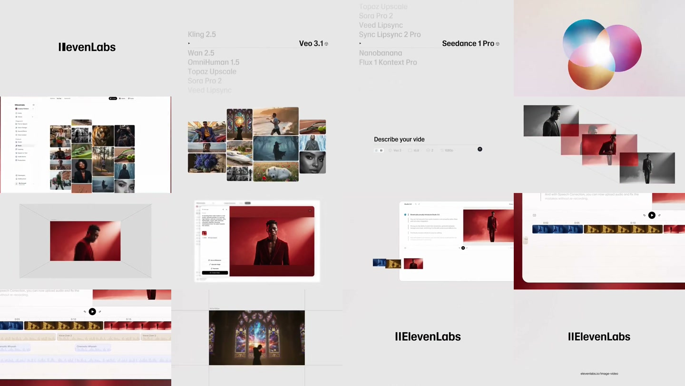
Từ khung #1 đến #6 là 3 khối cầu quang học nhập làm một; từ khung #7 đến #12 là vòng cuộn dọc khóa chọn dòng mục tiêu ở giữa.
absDist; (2) 3-Sphere Optical Blending: 3 khối cầu ánh sáng xoay quanh tâm với bán kính thu hẹp dần từ 150px → 74px tạo vùng giao thoa rực sáng ở giữa.#000000) & Xám bạc (#666666) → Việt hóa: Khung ngắm viền Vàng Gold (#FACC15) kết hợp Nhãn Đỏ Gạch Bỏ (#EF4444) khi khóa vào danh xưng sai.dist = idx - scrollP; rotateX = dist * -16deg; scale = interpolate(absDist, [0, 1, 2.5], [1, 0.88, 0.74]); opacity = interpolate(absDist, [0, 1, 2.2], [1, 0.42, 0.14]).7.37s – 9.87s | f442 → f592): Con lăn cuộn qua các kiểu làm kênh bề nổi ("Diễn viên hài kịch", "Nhảy trend TikTok", "Kịch sĩ"...) rồi khóa cứng tại dòng số 4 "✖ IDOL TRÊN VIDEO" đúng lúc anh Việt nói "Bạn không cần thiết phải làm idol trên video".• Màn 6 (
16.65s – 18.68s | f999 → f1120): 3 Khối cầu quang học (GIỌNG NÓI, NGỮ NGHĨA, HÀNH VI) giao thoa đẩy chỉ số thấu hiểu lên 99.8%.Mẫu 2 (Pin 333759022407655827) — La Bàn Vạch Chia Độ (Radial Tick-Mark Dial) & Cây Phân Cấp Bậc Thang (Staggered Indent File Tree)
File: assets/motion02/pinterest_samples/pin_02_333759022407655827.mp4 — Vòng xoay la bàn kỹ thuật kết hợp cây thư mục phân cấp bậc thang.
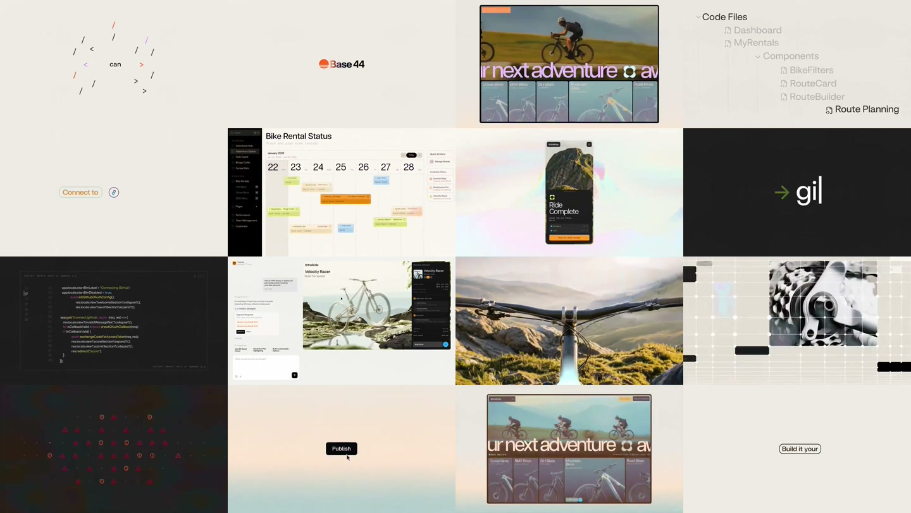
Khung #1–#4 là vòng la bàn chia vạch (Radial Dial); khung #10–#16 là sơ đồ cây bậc thang (Cascading Indent File Tree) mở từng nhánh.
Radial Tick-Mark Dial) xoay bước 10° với Cây Phân Tích Ngữ Nghĩa 3 Tầng (Staggered Indent File Tree). Khi nhánh con thứ 2 và thứ 3 bung ra theo đường nối chữ L phát sáng, các nhánh phía trên tự động giảm nhẹ độ sáng (Progressive Focus Dimming: 1.0 → 0.52 → 0.42) để mắt người xem tập trung hoàn toàn vào nhánh đang nói.#FEF08A → #FACC15 → #F59E0B) chữ Đen Obsidian cực nổi bật.indentPx = level * 48px; 3 lò xo mở nhánh khớp chính xác 3 nhịp giọng nói tại f782 (local 0), f862 (local 80) và f931 (local 149).13.04s – 16.65s | f782 → f999): Bóc tách 3 tầng thuật toán hiểu nội dung của AI: Nhánh 1 "NÓ HIỂU SÂU SẮC" → Nhánh 2 "CÁI VIDEO CỦA BẠN" → Nhánh 3 "GIẢI QUYẾT ĐƯỢC VIỆC GÌ".Mẫu 3 (Pin 962785226611831867) — Xếp Lớp Thẻ Kính 3D Trục Z (3D Glass Rolodex Stack) & Lưới Nghiêng 3D Đóng Gói (3D Isometric Packaging Grid Tilt)
File: assets/motion02/pinterest_samples/pin_03_962785226611831867.mp4 — Thẻ kính mờ xếp lớp theo chiều sâu Z-axis và mặt phẳng lưới nghiêng 3D.
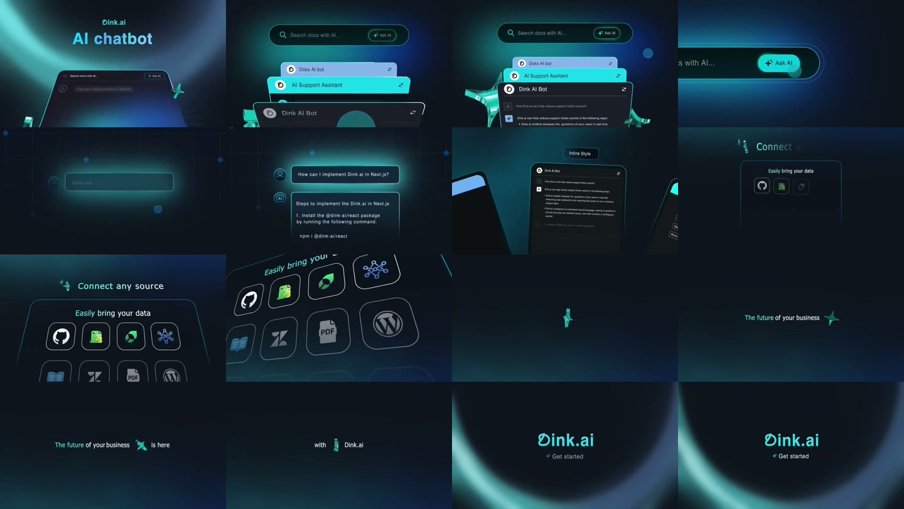
Khung #3–#7 thể hiện chồng thẻ kính 3D (Rolodex Stack); khung #9–#15 thể hiện mặt phẳng nghiêng Isometric gom các mô-đun về khối trung tâm.
backdropFilter: blur(16px)) xếp chồng theo chiều sâu translateZ(-120px, -60px, 0px) lật mở thẻ chính diện; (2) 3D Isometric Packaging Grid: Lưới không gian nghiêng rotateX(28deg) rotateZ(-12deg) nơi 6 mô-đun vệ tinh (MOD-01 → MOD-06) trượt hội tụ vào khối hộp Vàng Gold ở tâm.rgba(18, 22, 34, 0.85)) viền Vàng Gold (#FACC15) và khối hộp trung tâm phủ ánh kim vàng rực.transform: translate3d(0, yOffset * rolodexP, zOffset) rotateX(12deg) scale(s).Isometric Convergence:
modX = m.x * (1 - 0.18 * packLockP), modY = m.y * (1 - 0.18 * packLockP) kết hợp đường tia SVG strokeDasharray="10 8".19.58s – 21.70s | f1175 → f1302): Chồng thẻ kính 3D Rolodex lật mở câu "CHO NÊN VIỆC LÀM VIDEO BÂY GIỜ".• Màn 8 (
21.70s – 23.87s | f1302 → f1432): Lưới nghiêng Isometric gom 6 mô-đun kỹ năng đóng vào hộp trung tâm "BẢN CHẤT LÀ BẠN PHẢI ĐÓNG GÓI ĐƯỢC".Mẫu 4 (Pin 72761350251141725) — Nhịp Chữ Chớp Sáng (Kinetic Strobe), Hào Quang Sau Chữ (Backlit Aura) & Đảo Nền Âm Bản Tức Thì (Hard Background Invert)
File: assets/motion02/pinterest_samples/pin_04_72761350251141725.mp4 — Chữ lớn phát sáng trên nền đen, gõ chữ con trỏ và đảo ngược màu nền tức thì.
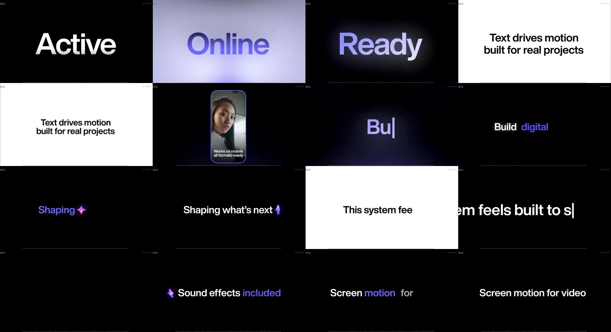
Khung #1–#8 là hiệu ứng Backlit Aura và con trỏ gõ chữ trên nền tối; khung #9–#12 là cú đảo nền sang sáng (Hard Invert) gây ấn tượng thị giác mạnh.
blur(45px) phía sau chữ đại tự; (2) Live Typing Cursor: Thanh con trỏ vàng #FACC15 trượt gõ từng ký tự; (3) 1-Frame Hard Background Invert + Camera Shake: Đảo màu nền từ Đen #08090C sang Trắng Kem #FAF8F5 ngay trong 1 khung hình kèm rung chấn máy quay tắt dần.#08090C) chữ Trắng Kem + Vàng Gold; Pha 3 đảo sang nền Trắng Kem (#FAF8F5) với khối băng rôn Đen tuyền và thanh gạch chéo Đỏ #DC2626.isInverted = frame >= 186; rung chấn tắt dần trong 20 frames: shakeX = Math.sin((frame - 186) * 1.9) * (206 - frame) * 0.55; shakeY = Math.cos((frame - 186) * 2.3) * (206 - frame) * 0.45.0.00s – 4.00s | f0 → f240): Nhịp 1 "CÁI MẠNG XÃ HỘI CŨ" (f8) → Nhịp 2 gõ chữ "MÀ MÌNH TỪNG BIẾT" (f99) → Nhịp 3 đảo nền âm bản tại f186 (3.10s) đập câu "NÓ ĐÃ CHẾT RỒI."Mẫu 5 (Pin 1125829606877714781) — Trục Hình Trụ Chữ 3D Nghiêng -8° (Oblique Cylindrical Text Drum) & Khóa Lẫy Cơ Học Tại Tâm (Mechanical Snap 0°)
File: assets/motion02/pinterest_samples/pin_05_1125829606877714781.mp4 — Trục trống chữ 3D nghiêng chéo xoay tốc độ cao rồi khóa thẳng hàng tại tâm.
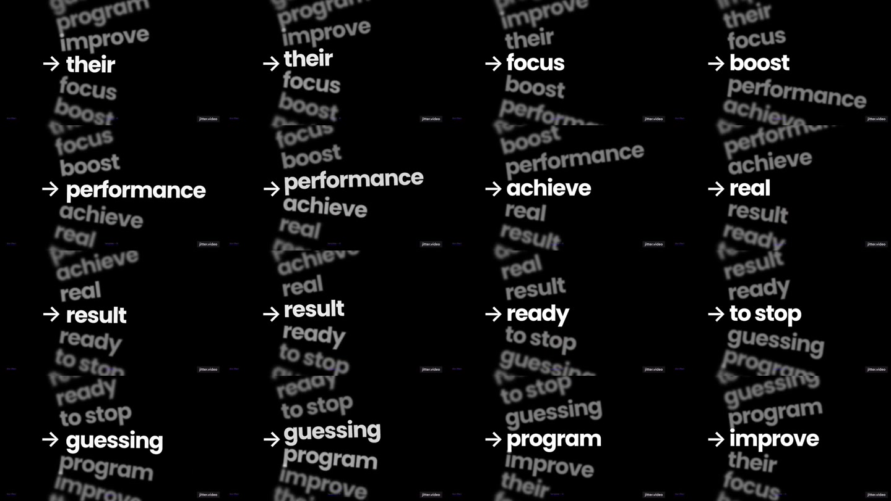
Các dòng chữ uốn cong quanh bề mặt hình trụ 3D nghiêng -8°, dòng được chọn sáng rực ở giữa trong khi các dòng trên/dưới uốn khuất dần.
Oblique Cylindrical Drum) đặt nghiêng góc -8°. Khi trống xoay từ dòng 0 đến dòng 4, các dòng trượt theo cung tròn 3D (rotateX + dịch trục Z âm). Đúng thời điểm chốt luận điểm, toàn bộ trục trống giật cơ học từ góc nghiêng -8° về 0° nằm ngang tuyệt đối (Mechanical Snap).#FEF08A → #FACC15 → #F59E0B) kèm 4 thẻ chỉ số cũ (LIKE: OFF, SHARE: OFF, COMMENT: OFF, VIEW ẢO: OFF) bị gạch bỏ phía dưới.drumTiltDeg = interpolate(snapP, [0, 1], [-8, 0]); tọa độ mỗi thanh chữ trên mặt trụ: yOffset = rel * stepH, rotateX = rel * -22deg, zOffset = -absRel * 55px.9.87s – 13.04s | f592 → f782): Trống trụ 3D xoay lúc anh Việt nói "Bởi vì ấy AI..." và khóa thẳng góc 0° tại f689 (11.49s) với dòng chữ "NÓ KHÔNG ĐẾM TƯƠNG TÁC NỮA".Mẫu 6 (Pin 778911698106657356) — Viên Nang Kính Mờ (Frosted Glass Pill) Bung Mở Thẻ Tăng Trưởng 3D & Lấy Nét Chuyển Tiêu Cự (Rack Focus Blur-to-Sharp)
File: assets/motion02/pinterest_samples/pin_06_778911698106657356.mp4 — Viên nang kính mờ bung thành bảng biểu đồ 3D và hiệu ứng lấy nét tiêu cự Rack Focus.
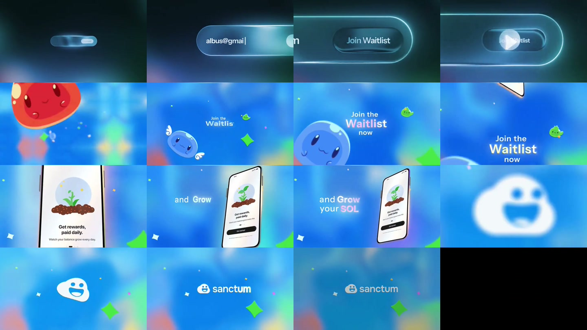
Khung #1–#5 là viên nang kính mờ (Frosted Glass Pill); khung #6–#11 bung mở thành thẻ biểu đồ 3D; khung #12–#16 lấy nét tiêu cự (Rack Focus) vào huy hiệu kết màn.
38% → 148%); (2) Shockwave Banner: Băng rôn Vàng Gold bật tung ở cạnh dưới; (3) Optical Rack Focus: Bảng biểu đồ phía sau mờ dần (blur(6px), opacity: 0.45) để đẩy huy hiệu thương hiệu NGUYỄN VIỆT • CREATOR ENGINE 60FPS lấy nét căng ở tiền cảnh.rgba(16, 20, 32, 0.88)) + cột biểu đồ và băng rôn Vàng Gold (#FACC15).transform: perspective(1200px) rotateX((1 - cardExpandP) * 18deg) scale(0.84 + 0.16 * cardExpandP); Rack Focus tại f1573 (local 141): filter: blur(rackFocusP * 6px) cho lớp nền và blur((1 - rackFocusP) * 10px) cho huy hiệu tiền cảnh.23.87s – 27.00s | f1432 → f1620): Bung mở thẻ "KỸ NĂNG THẬT CỦA MÌNH" (f1433) → Băng rôn chốt "ĐỂ BÁN RA THỊ TRƯỜNG" (f1512) → Lấy nét Rack Focus huy hiệu thương hiệu anh Việt (f1573 → f1620).III. Kịch Bản Phân Cảnh 9 Màn Khớp 100% Thoại & Mã Nguồn Toán Học Trong VietSemanticEra27s.tsx
Toàn bộ 27 giây (1.620 frames @ 60fps) được chia thành 9 Màn (Scenes) tương ứng chính xác với 9 ý trọn vẹn trong lời nói của anh Việt. Dưới đây là bảng tổng hợp và giải phẫu từng màn kèm hình chụp thực tế ở cả 3 chế độ và danh sách các mã slice_id âm thanh từ kho sfx.fedu.vn:
3.1. Bảng Tổng Hợp 9 Màn Frame-Exact (60fps) • Mẫu Pinterest • Công Thức Remotion • Slice ID Âm Thanh
| Màn & Frame (60fps) | Lời Thoại Anh Việt & Chữ Hiển Thị | Mẫu Pinterest Kết Hợp | Hàm Toán Học Trong VietSemanticEra27s.tsx |
Cues & Mã Slice ID (sfx.fedu.vn) |
|---|---|---|---|---|
Màn 1f0 → f240(0.00s – 4.00s) |
• 0.13s: CÁI MẠNG XÃ HỘI CŨ• 1.65s: MÀ MÌNH TỪNG BIẾT• 3.10s: NÓ ĐÃ CHẾT RỒI. |
Mẫu 4 ( pin_04 Kinetic Strobe, Typing Cursor & Hard Invert) |
• beat1P = spring(f-7)• typeProgress = interpolate(f, [99,148], [0,1])• isInverted = f >= 186 + shakeX/Y |
• #M1_OPEN (0.12s): Slices #808, #3149, #3740, #4716• #M1_BEAT2 (1.65s): Slices #4015, #768, #10283, #4789• #M1_INVERT_GLITCH & SLAM (3.10s): Slices #2, #73, #3981, #7295, #297, #3789, #7083, #3610 |
Màn 2f240 → f442(4.00s – 7.37s) |
• 4.00s: BÂY GIỜ LÀ• 4.70s: KỶ NGUYÊN CỦA NGỮ NGHĨA |
Mẫu 0 ( pin_00 4 Golden Orbit Rings & 18-Dot Comet Trail) |
• cubicBezierPoint(cursorT, P0..P3)• 4 vòng SVG xoay ±0.85deg/f• 18 hạt sao chổi Math.cos/sin(rad) * 230 |
• #M2_CLICK_ORBIT (4.00s): Slices #4021, #5054, #5• #M2_ERA_MORPH & SLAM (4.70s): Slices #517, #10253, #4866, #3692, #522, #3790, #7084, #3612 |
Màn 3f442 → f592(7.37s – 9.87s) |
• 7.37s: BẠN KHÔNG CẦN THIẾT PHẢI LÀM• 8.60s: ✖ IDOL TRÊN VIDEO |
Mẫu 1 ( pin_01 Vertical Slot-Machine Wheel Picker) |
• scrollP = interpolate(f, [6,74], [0,4], EXPO_OUT)• rotateX = (idx - scrollP) * -16deg• Hybrid: trimBefore = 62 (f474..f592) |
• #M3_WHEEL_SCROLL (7.37s): Slices #4329, #771, #4437, #7378• #M3_IDOL_LOCK (8.60s): Slices #524, #3791, #7087, #3618 |
Màn 4f592 → f782(9.87s – 13.04s) |
• 9.88s: BỞI VÌ AI ẤY• 11.49s: NÓ KHÔNG ĐẾM TƯƠNG TÁC NỮA |
Mẫu 5 ( pin_05 Oblique -8° Cylindrical Drum & 0° Snap) |
• drumSpinP = interpolate(f, [4,97], [0,4])• drumTiltDeg = interpolate(snapP, [0,1], [-8,0])• zOffset = -absRel * 55px |
• #M4_DRUM_SPIN (9.90s): Slices #3278, #3159, #4439, #4786• #M4_NO_INTERACTION_LOCK (11.49s): Slices #4022, #776, #156, #4791 |
Màn 5f782 → f999(13.04s – 16.65s) |
• 13.04s: NÓ HIỂU SÂU SẮC• 14.37s: CÁI VIDEO CỦA BẠN• 15.52s: GIẢI QUYẾT ĐƯỢC VIỆC GÌ |
Mẫu 2 ( pin_02 36-Tick Radial Dial & Staggered File Tree) |
• 36 vạch rotate(i * 10deg)• 3 lò xo node1P(f0), node2P(f80), node3P(f149)• Làm mờ dần nhánh cũ 0.52 → 0.42 |
• #M5_TREE_NODE1 (13.04s): Slices #4330, #777, #4142, #4670• #M5_TREE_NODE2 (14.37s): Slices #4024, #779, #165, #4814• #M5_TREE_NODE3 (15.52s): Slices #4025, #5082, #166 |
Màn 6f999 → f1175(16.65s – 19.58s) |
• 16.65s: AI BÂY GIỜ ẤY• 17.90s: NÓ HIỂU BẠN 99.8%• 18.68s: CÒN HƠN VỢ BẠN |
Mẫu 1 + Mẫu 0 ( 3-Sphere Optical Blend + Golden Sword Slit) |
• 3 khối cầu orbitR = interpolate(sphereP, [0,1], [150,74])• Tia kiếm cắt tại local f120..134 (rotate(-9deg)) |
• #M6_SPHERE_BLEND (16.65s): Slices #525, #10257, #4871, #6412• #M6_UNDERSTAND_998 (17.90s): Slices #4038, #782, #194, #8949• #M6_SWORD_SWEEP & SLAM (18.68s): Slices #4040, #157, #197, #526, #3792, #7090, #3639 |
Màn 7f1175 → f1302(19.58s – 21.70s) |
• 19.60s: CHO NÊN VIỆC LÀM VIDEO BÂY GIỜ |
Mẫu 3 (Pha A) ( pin_03 3D Glass Rolodex Stack) |
• 2 thẻ kính sau zOffset = -120, -60• Thẻ chính rotateX((1 - rolodexP) * -28deg) |
• #M7_ROLODEX_3D (19.60s): Slices #3281, #3164, #4143, #4790 |
Màn 8f1302 → f1432(21.70s – 23.87s) |
• 21.70s: BẢN CHẤT LÀ BẠN• 22.35s: PHẢI ĐÓNG GÓI ĐƯỢC |
Mẫu 3 (Pha B) ( pin_03 3D Isometric Packaging Grid Tilt) |
• Lưới nền rotateX(28deg) rotateZ(-12deg)• 6 mô-đun thu về tâm m.x * (1 - 0.18 * packLockP) |
• #M8_ISO_TILT (21.70s): Slices #4857, #3165, #3741, #4719• #M8_PACKAGE_BOX (22.35s): Slices #527, #3166, #202, #7624 |
Màn 9f1432 → f1620(23.87s – 27.00s) |
• 23.88s: KỸ NĂNG THẬT CỦA MÌNH• 25.20s: ĐỂ BÁN RA THỊ TRƯỜNG• 26.25s: CREATOR ENGINE 60FPS |
Mẫu 6 ( pin_06 Frosted Glass Pill → 3D Growth Card & Rack Focus) |
• 6 cột tăng trưởng [38, 54, 72, 92, 118, 148]• marketSlamP = spring(f - 80)• rackFocusP = spring(f - 141) |
• #M9_PILL_TO_CARD (23.88s): Slices #10082, #3170, #4147, #4792• #M9_SELL_MARKET (25.20s): Slices #528, #3793, #7091, #7626• #M9_RACK_FOCUS_LOGO (26.25s): Slices #529, #180, #4872, #6413 |
3.2. Giải Phẫu Trực Quan & Mã Toán Học Màn 1, Màn 2 & Màn 3 (0.00s → 9.87s)
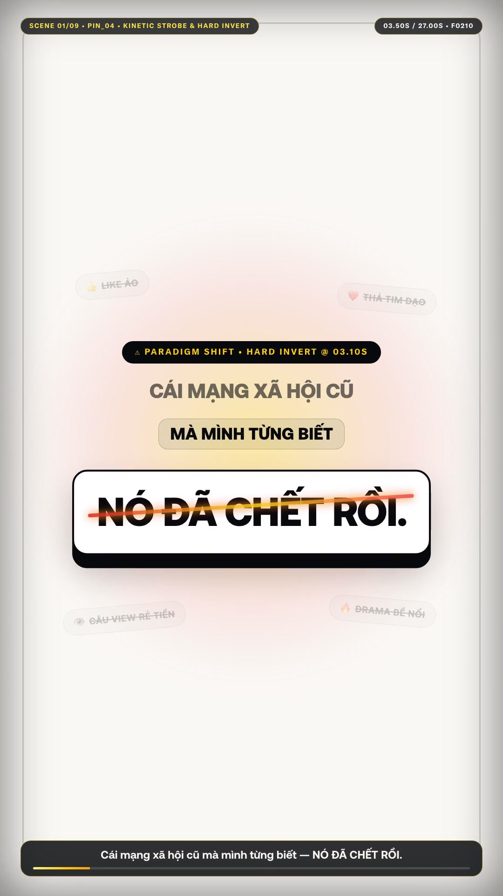
Tại f186 (3.10s), nền Đen đảo sang Trắng Kem ngay khi anh Việt nhấn mạnh "NÓ ĐÃ CHẾT RỒI."
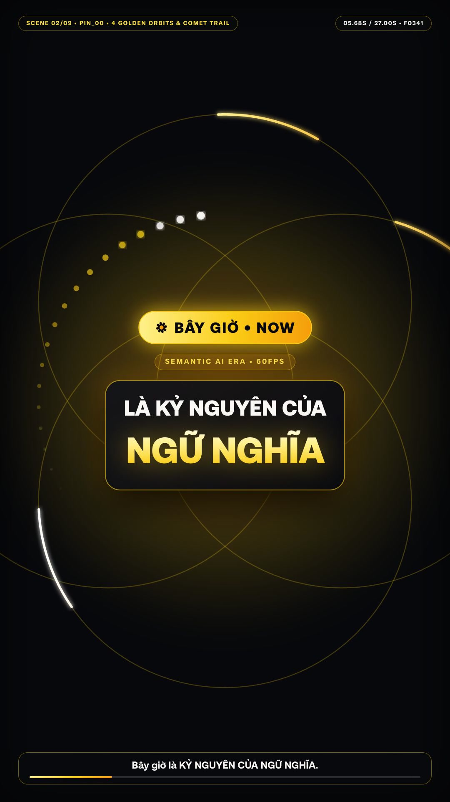
4 vòng quỹ đạo Vàng Gold và 18 hạt sao chổi hội tụ nổ chữ "KỶ NGUYÊN CỦA NGỮ NGHĨA".
Bản Hybrid ghép cảnh anh Việt nói trực diện phía trên vòng cuộn dọc khóa dòng "✖ IDOL TRÊN VIDEO".
Trích đoạn mã nguồn Toán học Màn 1 & Màn 3 trong VietSemanticEra27s.tsx:
// MÀN 1 (f0 -> f240): Đảo nền 1-Frame Hard Invert tại f186 (3.10s) kèm rung chấn tắt dần
const isInverted = frame >= 186;
const shakeX = frame >= 186 && frame <= 206
? Math.sin((frame - 186) * 1.9) * (206 - frame) * 0.55 : 0;
const shakeY = frame >= 186 && frame <= 206
? Math.cos((frame - 186) * 2.3) * (206 - frame) * 0.45 : 0;
// MÀN 3 (f442 -> f592): Vòng quay dọc 3D (Vertical Slot-Machine Wheel Picker)
const scrollP = interpolate(frame, [6, 74], [0, 4], {
extrapolateLeft: 'clamp', extrapolateRight: 'clamp', easing: EXPO_OUT,
});
// Mỗi hàng chữ xoay nghiêng theo khoảng cách tới tâm ngắm:
const dist = idx - scrollP;
const rotateX = dist * -16;
const scale = interpolate(Math.abs(dist), [0, 1, 2.5], [1, 0.88, 0.74], { extrapolateRight: 'clamp' });3.3. Giải Phẫu Trực Quan & Mã Toán Học Màn 4, Màn 5 & Màn 6 (9.87s → 19.58s)
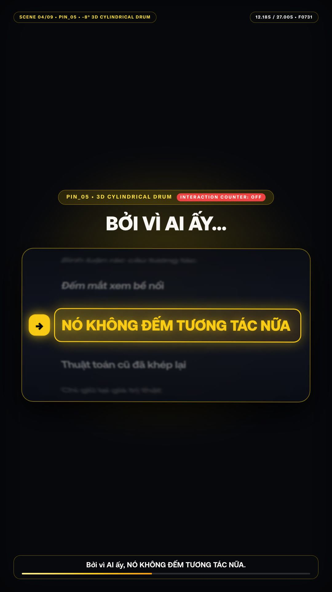
Trống chữ 3D nghiêng -8° giật khóa về 0° tại dòng "NÓ KHÔNG ĐẾM TƯƠNG TÁC NỮA".
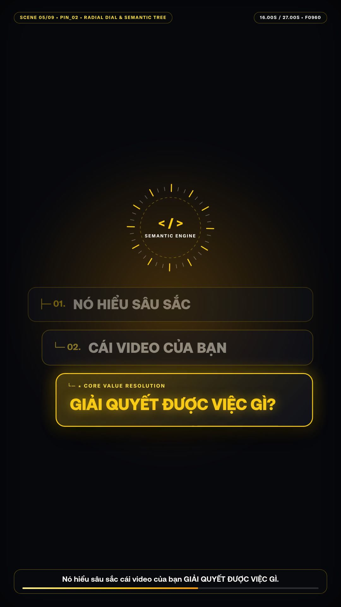
Vòng la bàn 36 vạch chia độ + Sơ đồ cây 3 nhánh sáng bừng ở nhánh 3 "GIẢI QUYẾT ĐƯỢC VIỆC GÌ".
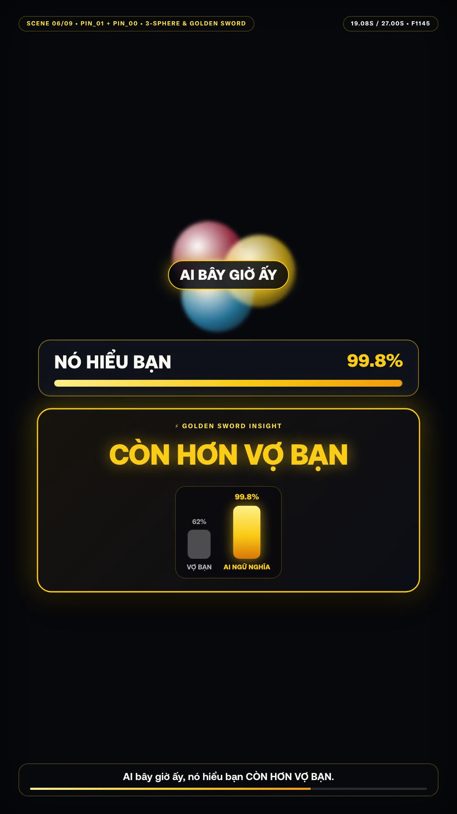
3 khối cầu giao thoa đạt 99.8% và tia kiếm vàng cắt mở thẻ "CÒN HƠN VỢ BẠN".
Trích đoạn mã nguồn Toán học Màn 4, Màn 5 & Màn 6 trong VietSemanticEra27s.tsx:
// MÀN 4 (f592 -> f782): Trống hình trụ nghiêng -8 độ khóa lẫy cơ học về 0 độ tại f689 (local f97)
const drumSpinP = interpolate(frame, [4, 97], [0, 4], { extrapolateLeft: 'clamp', extrapolateRight: 'clamp', easing: EXPO_OUT });
const snapP = spring({ frame: Math.max(0, frame - 97), fps, config: { mass: 0.85, damping: 10, stiffness: 185 } });
const drumTiltDeg = interpolate(snapP, [0, 1], [-8, 0]);
// MÀN 5 (f782 -> f999): Làm mờ dần nhánh cha khi nhánh con bung mở (Progressive Focus Dimming)
const node1Opacity = frame >= 149 ? 0.42 : frame >= 80 ? 0.52 : clamp01(node1P);
const node2Opacity = frame >= 149 ? 0.48 : frame >= 80 ? clamp01(node2P) : 0;
// MÀN 6 (f999 -> f1175): 3 Khối cầu quang học hội tụ + Tia kiếm vàng cắt chéo tại local f120..134
const orbitR = interpolate(sphereP, [0, 1], [150, 74]);
const swordCutP = interpolate(frame, [120, 134], [0, 1], { extrapolateLeft: 'clamp', extrapolateRight: 'clamp', easing: EXPO_OUT });3.4. Giải Phẫu Trực Quan & Mã Toán Học Màn 7, Màn 8 & Màn 9 (19.58s → 27.00s)
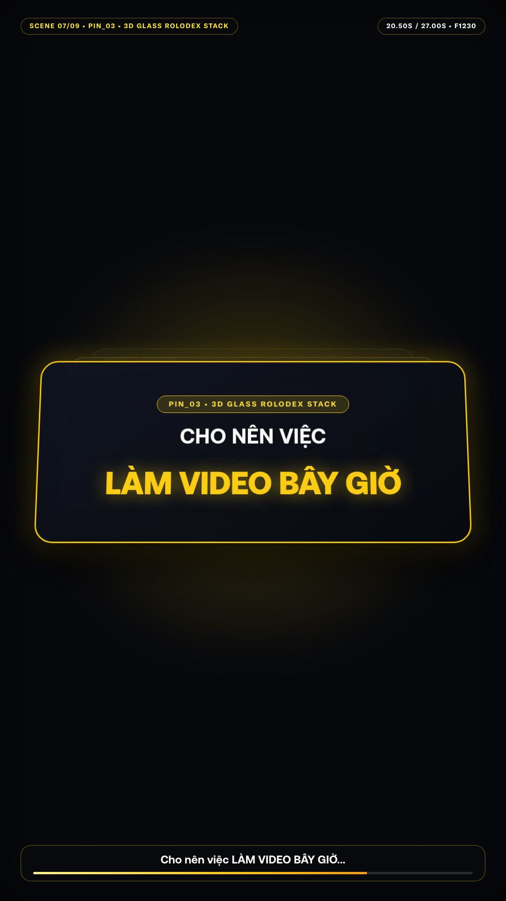
3 lớp thẻ kính mờ xếp chồng theo trục Z lật mở tiêu đề "LÀM VIDEO BÂY GIỜ".
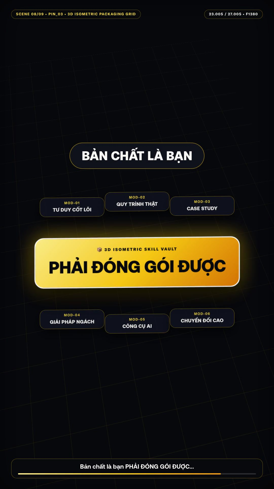
6 mô-đun vệ tinh trượt trên mặt phẳng nghiêng Isometric gom vào khối hộp "PHẢI ĐÓNG GÓI ĐƯỢC".
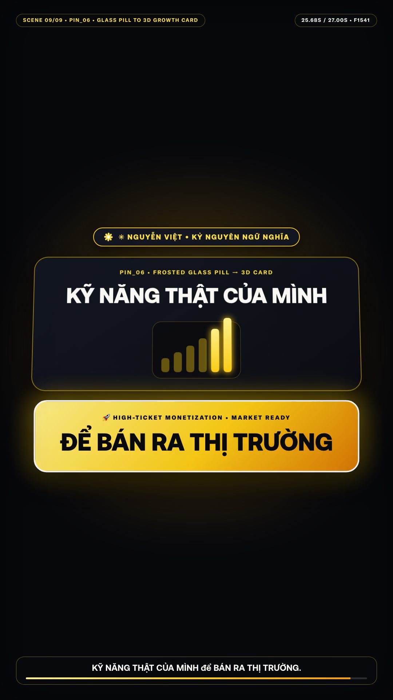
Viên nang kính mờ bung thành biểu đồ 6 cột "KỸ NĂNG THẬT CỦA MÌNH — ĐỂ BÁN RA THỊ TRƯỜNG".
Trích đoạn mã nguồn Toán học Màn 7, Màn 8 & Màn 9 trong VietSemanticEra27s.tsx:
// MÀN 7 (f1175 -> f1302): Chồng thẻ kính 3D Rolodex theo chiều sâu trục Z
const backCards = [
{ zOffset: -120, yOffset: -86, scale: 0.84, opacity: 0.38, label: 'LEGACY CONTENT • 2022' },
{ zOffset: -60, yOffset: -44, scale: 0.92, opacity: 0.62, label: 'TRANSITION • 2025' },
];
// MÀN 8 (f1302 -> f1432): Mặt phẳng lưới nghiêng Isometric & Hội tụ 6 mô-đun về hộp Vàng Gold
// transform: 'rotateX(28deg) rotateZ(-12deg) scale(1.25)'
const modX = m.x * (isPortrait ? 1 : 1.28) * (1 - 0.18 * packLockP);
const modY = m.y * (1 - 0.18 * packLockP);
// MÀN 9 (f1432 -> f1620): Viên nang kính mờ bung mở Card 3D & Lấy nét tiêu cự Rack Focus tại f1573
const cardExpandP = spring({ frame, fps, config: { mass: 1, damping: 14, stiffness: 130 } });
const marketSlamP = spring({ frame: Math.max(0, frame - 80), fps, config: { mass: 0.95, damping: 11, stiffness: 165 } });
const rackFocusP = spring({ frame: Math.max(0, frame - 141), fps, config: { mass: 1, damping: 14, stiffness: 130 } });IV. Hướng Dẫn 6 Bước Thực Hiện Trên Antigravity (Biến Video Quay Thật + Thoại Thành Motion Graphic 60fps)
Toàn bộ các bước làm ra bộ sản phẩm motion02 phía trên đã được đóng gói thành bộ công cụ tự động trên Antigravity. Dưới đây là 6 bước thực thi để anh Việt nắm rõ cơ chế bên dưới và gọi lại bất cứ lúc nào:
Bước 1: Khởi Chạy 3 Subagents (Model: "inherit") Chạy Song Song Bóc Tách Dữ Liệu
extract_beat_timeline.py để cắt đúng 27 giây video gốc, xuất file voice.wav (48kHz Stereo PCM), tạo bản proxy_1080p60.mp4 và quét năng lượng sóng âm theo cửa sổ 20ms. Nhờ bước quét sóng âm này, hệ thống bắt được trọn vẹn 3 nhịp nói mở đầu (0.00s – 4.00s: "Cái mạng xã hội cũ / mà mình từng biết / nó đã chết rồi") vốn bị bỏ trống trong file .srt.pin_01_grid.jpg → pin_06_grid.jpg) và lập hồ sơ thông số chuyển động (Easing, góc nghiêng 3D, độ mờ quang học) cho từng mẫu./Users/vietmac/.gemini/sfx_brain_cache/scripts/sfx.py (kho 10.768 slices của sfx.fedu.vn) để ánh xạ 12 nhịp thoại và 9 màn sang 24 điểm nổ âm thanh (cues_27s.json).Bước 2: Tổng Hợp Master Plan 9 Màn & Kiểm Soát Chữ Tiếng Việt Chuẩn Unicode NFC
Sau khi 3 Subagents trả kết quả, hệ thống tổng hợp bản thiết kế Master Plan 9 Màn và đối chiếu kiến trúc với Claude/Opus theo 4 nguyên tắc kỹ thuật nghiêm ngặt:
- Ngân sách chuyển động 60fps (Motion Budget): Mỗi màn có
12–18 framesvào màn bằng hàm lò xo vật lý (spring), duy trì chuyển động vi mô liên tục trong lúc giữ nhịp (không đứng yên quá20 frames), và thoát màn gọn trong8–12 frames. - Chuẩn hóa Tiếng Việt Unicode NFC: Toàn bộ chuỗi chữ hiển thị trên màn hình đều đi qua hàm
nfc(text)(s.normalize('NFC')) để ngăn lỗi tách rời dấu thanh khi render trên nhân Chromium. - Chống cắt dấu chồng tiếng Việt: Mọi tiêu đề in hoa có dấu chồng (
Ấ,Ể,Ữ,Ộ,Ự) đều bắt buộc đặtlineHeight: 1.28đến1.34kèmoverflow: 'visible'. - Đồng bộ bảng màu thương hiệu anh Việt: Toàn bộ 7 mẫu Pinterest có màu gốc khác nhau (xanh lá, tím, cam, trắng xám) đều được quy về đúng một hệ màu Đen Obsidian (
#08090C) – Trắng Kem (#FAF8F5) – Vàng Gold (#FACC15/#F59E0B).
Bước 3: Phối Âm 4 Lớp Tự Động Từ sfx.fedu.vn & Trộn Giọng Thoại Voice-Safe
Chạy công cụ compose_voicesafe_sfx.py để kết xuất file âm thanh tổng master_audio_27s.wav:
python3 /Users/vietmac/.gemini/config/skills/talking-head-to-motion/scripts/compose_voicesafe_sfx.py \
--voice-wav "/Users/vietmac/Documents/CODE/course_repo/assets/motion02/qc_offline_27s_voice.wav" \
--cues-json "/Users/vietmac/Documents/CODE/course_repo/assets/motion02/cues_27s.json" \
--duration 27.0 \
--out-wav "/Users/vietmac/Documents/CODE/course_repo/assets/motion02/master_audio_27s.wav"Mỗi điểm nhấn (Cue) được ghép từ 4 lớp âm thanh: L1_lead_in (tiếng gió mồi trước đỉnh hình ảnh 60–140ms), L2_transient (tiếng click/kim loại sắc gọn ngay tại frame nổ chữ), L3_body (lực trầm sub-bass tạo độ đầm), và L4_texture (đuôi âm thanh cơ khí/băng từ). Sau đó bộ lọc FFmpeg sidechaincompress tự động hạ nhẹ nền SFX mỗi khi anh Việt cất tiếng nói, giữ cho lời thoại rõ từng chữ.
Bước 4: Lập Trình 1 Component Duy Nhất Xuất Ra Cả 3 Phiên Bản Trên Remotion 60fps
Thay vì viết 3 file mã nguồn rời rạc dễ lệch nhịp, toàn bộ 9 màn được lập trình trong một Component duy nhất VietSemanticEra27s.tsx nhận tham số mode ('full-9x16' | 'full-16x9' | 'hybrid-9x16') và đăng ký thành 3 Composition trong src/Root.tsx:
# Kết xuất đồng loạt 3 phiên bản ở tốc độ 60fps (1.620 frames, CRF 18, H.264 yuv420p):
npx remotion render src/index.ts VietSemanticEra9x16 out/motion02_full_mg_9x16_60fps.mp4 --codec=h264 --crf=18
npx remotion render src/index.ts VietSemanticEraHybrid9x16 out/motion02_hybrid_9x16_60fps.mp4 --codec=h264 --crf=18
npx remotion render src/index.ts VietSemanticEra16x9 out/motion02_full_mg_16x9_60fps.mp4 --codec=h264 --crf=18Bước 5: Kiểm Định Tự Động (verify_motion_deliverable.py) & Soi Lưới 9 Khung Hình
Sau khi kết xuất, từng file .mp4 đều phải vượt qua bài kiểm tra của script verify_motion_deliverable.py trước khi nhúng lên trang web:
python3 /Users/vietmac/.gemini/config/skills/talking-head-to-motion/scripts/verify_motion_deliverable.py \
--video "/Users/vietmac/Documents/CODE/course_repo/assets/motion02/motion02_full_mg_9x16_60fps.mp4" \
--expected-duration 27.0 \
--expected-fps 60 \
--grid-out "/Users/vietmac/Documents/CODE/course_repo/assets/motion02/frames/motion02_9x16_9scenes_grid.jpg"motion02_full_mg_9x16_60fps.mp4: PASS 100% (1080×1920, 60.0 fps, 1.620 frames, 27.00s, Audio -15.4 LUFS).•
motion02_hybrid_9x16_60fps.mp4: PASS 100% (1080×1920, 60.0 fps, 1.620 frames, 27.00s, Audio -15.4 LUFS).•
motion02_full_mg_16x9_60fps.mp4: PASS 100% (1920×1080, 60.0 fps, 1.620 frames, 27.00s, Audio -15.4 LUFS).Bước 6: Đóng Gói Thành Skill Tái Sử Dụng talking-head-to-motion Cho Các Lần Tiếp Theo
Toàn bộ các script bóc tách sóng âm, phối âm 4 lớp sfx.fedu.vn, bộ 7 mẫu chuyển động Pinterest và script kiểm định đã được đóng gói cố định vào Skill talking-head-to-motion tại đường dẫn /Users/vietmac/.gemini/config/skills/talking-head-to-motion/SKILL.md.
Ở các video tiếp theo, anh Việt chỉ cần cung cấp File Video Quay Thật (Talking Head) + File Phụ Đề .SRT (hoặc chỉ cần Video có sẵn giọng nói) và nhắn câu lệnh ngắn gọn:
TALKING HEAD TO MOTION:
- Video gốc: /đường/dẫn/video_talking_head.mp4
- Phụ đề SRT (nếu có): /đường/dẫn/file.srt
- Đoạn cần làm: 0s -> 30s
Hãy bóc tách sóng âm + thoại, phối âm 4 tầng từ sfx.fedu.vn và xuất trọn bộ 3 phiên bản Motion Graphic 60fps (Full 9:16, Hybrid 9:16, Full 16:9).